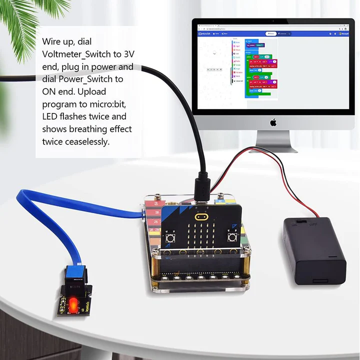

Pour installer et commencer à utiliser votre Micro:bit, vous devez d'abord le connecter à un ordinateur via un câble micro-USB. Une fois connecté, le Micro:bit apparaîtra comme un lecteur USB. Vous pouvez ensuite télécharger un environnement de développement intégré (IDE) tel que le JavaScript Blocks Editor ou MicroPython pour commencer à programmer votre carte.
